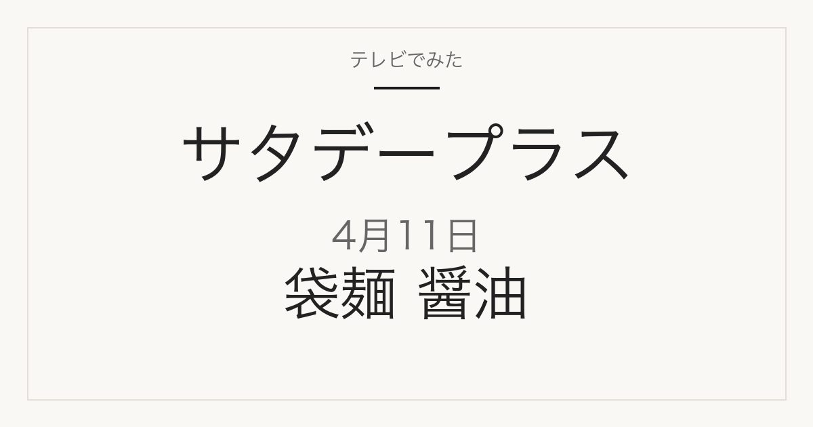

1位／番組掲載価格 466円
東洋水産
マルちゃん ZUBAAAN! 背脂濃厚醤油 3食パック

商品名から読み取れる容量・入数は3食入りです。メーカー商品で、スーパーや通販で扱われます。番組掲載と同じ単品です（125g×3食入）。楽天24の税込価格494円（2026-09-09 14:28確認、通常1-2日で発送予定表示）
テレビ紹介商品の記録メディア
2026年4月11日（土）放送
「ひたすら試してランキング」で調査された5品

2026年4月11日放送のサタデープラス「ひたすら試してランキング」インスタント袋麺 醤油の1位は、東洋水産「マルちゃん ZUBAAAN! 背脂濃厚醤油 3食パック」（番組掲載価格466円）です。全5品の番組掲載価格は197円から734円です。このうち5品は楽天市場で販売ページを確認できました（販売単位が番組掲載と異なる場合があります）。
この記事には広告・アフィリエイトリンクが含まれます。順位・商品名・番組掲載価格は番組公式情報で確認しています。価格は2026年4月11日時点の番組調べで、現在の販売価格・在庫・送料は販売先で確認してください。容量・入数は商品名から読み取れる範囲で記載し、確認できないものは「未確認」としています。
番組の順位は番組独自の調査によるもので、当サイトの評価ではありません。コストパフォーマンスが項目に含まれるため、上位が最安とは限りません。
| 順位 | 商品名 | メーカー | 番組掲載価格 | 容量・入数 | 購入先 |
|---|---|---|---|---|---|
| 1位 | マルちゃん ZUBAAAN! 背脂濃厚醤油 3食パック | 東洋水産 | 466円 | 3食入り | 楽天市場（販売ページを確認） |
| 2位 | マルちゃん正麺 醤油味 5食パック | 東洋水産 | 734円 | 5食入り | 楽天市場（販売ページを確認） |
| 3位 | 明星 中華三昧 赤坂璃宮 広東風醤油 | 明星食品 | 197円 | 未確認 | 楽天市場（販売ページを確認） |
| 4位 | 日清ラ王 醤油 3食パック | 日清食品 | 440円 | 3食入り | 楽天市場（販売ページを確認） |
| 5位 | tabete だし麺 長崎県産炭焼きあごだし 醤油らーめん | 国分グループ本社 | 232円 | 未確認 | 楽天市場（販売ページを確認） |
1位／番組掲載価格 466円
東洋水産
商品名から読み取れる容量・入数は3食入りです。メーカー商品で、スーパーや通販で扱われます。番組掲載と同じ単品です（125g×3食入）。楽天24の税込価格494円（2026-09-09 14:28確認、通常1-2日で発送予定表示）
2位／番組掲載価格 734円
東洋水産

商品名から読み取れる容量・入数は5食入りです。メーカー商品で、スーパーや通販で扱われます。番組掲載と同じ単品です（5食パック）。ココデカウの税込価格757円（2026-09-09 14:30確認）。種のalude/fm6520は2026-09-09 14:28時点で「完売のため現在ご購入頂けません」表示のため差し替え
3位／番組掲載価格 197円
明星食品

メーカー商品で、スーパーや通販で扱われます。6袋セットの販売で、番組掲載価格（袋数の記載なし）とは販売単位が違います。楽天24の税込価格1,321円（2026-09-09 14:31確認、通常1-2日で発送予定表示）。楽天で確認できた1袋単品の出品（macaron-store/y-kn-791、税込1,080円・2026-09-09 14:29確認）は番組掲載価格197円と大きく乖離するため、6袋セットを案内
4位／番組掲載価格 440円
日清食品

商品名から読み取れる容量・入数は3食入りです。メーカー商品で、スーパーや通販で扱われます。番組掲載と同じ単品です（3食入）。楽天24の税込価格498円（2026-09-09 14:29確認、通常1-2日で発送予定表示）。旧JAN(91g)からリニューアル後の新JANページ
5位／番組掲載価格 232円
国分グループ本社

メーカー商品で、スーパーや通販で扱われます。番組掲載と同じ単品です（108g×1個）。くまの中谷商店の税込価格245円（2026-09-09 14:29確認、14営業日以内に発送予定表示）
MBS「サタプラ」ひたすら試してランキング インスタント袋麺 醤油（2026年4月11日放送）
順位・商品名・番組掲載価格は2026年4月11日時点の番組公式ページによります。MBS公式サイトは直近の放送回のみ公開しているため、この回の公式ページは現在閲覧できません。上のリンクはインターネットアーカイブに保存された公式ページのコピーです。価格は放送時点の番組調べで、現在の販売価格・在庫・送料は販売先で確認してください。
公開：2026年9月9日／最終更新：2026年9月9日